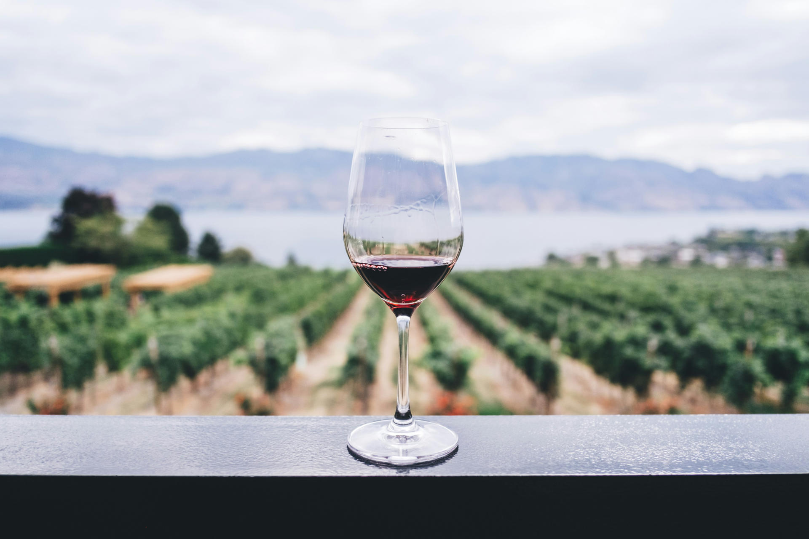

En JAB Consultants creemos que los eventos corporativos van mucho más allá de una simple reunión. Son una herramienta poderosa de la estrategia de marketing y ventas de cualquier pyme y startup. Los diseñamos para mejorar la reputación de vuestra empresa y, al mismo tiempo, crear un impacto positivo y duradero en vuestro equipo.
Os invitamos a descubrir el Priorat, una comarca de paisajes únicos y llena de encanto. Está situada a menos de 1h de los aeropuertos y estaciones del AVE de Tarragona y Lleida. Esta tierra de viñedos, olivos y almendros es el escenario perfecto para vuestros eventos, lejos del bullicio de la ciudad y rodeado de un ambiente natural que inspira y conecta.
El Priorat no es solo un territorio rural; es un destino lleno de historia, cultura y modernidad. Pueblos encantadores, con infraestructuras punteras y una amplia gama de actividades, hacen de esta región el lugar ideal para cualquier evento corporativo. Organizar vuestro evento aquí os ofrece una oportunidad única para que vuestro equipo y vuestros clientes experimenten algo realmente especial.
En JAB Consultants, organizamos eventos corporativos en entornos rurales con el objetivo de ofreceros una experiencia que combine trabajo y desconexión en un ambiente inspirador. Este cambio de entorno fomenta la creatividad y mejora la cohesión del equipo, dando como resultado un evento inolvidable y efectivo. Algunas de las actividades que se pueden realizar son cata de vino o aceite, escalada, yoga, observación nocturna de estrellas, rutas por el Parque Natural de Montsant y muchas más. Todas ellas son experiencias que conectan y transforman. Tienen diferentes niveles de intensidad y duración, ajustándose al perfil de los participantes.
Nosotros nos encargamos de la gestión y coordinación de todas las fases del evento, incluyendo localización, requerimientos técnicos, transporte, catering, alojamiento, comunicación y marketing.
Diseñamos eventos corporativos adaptados a las necesidades de cada empresa:
En JAB Consultants combinamos el conocimiento del Priorat con nuestra experiencia en la organización de eventos para asegurarnos de que cada detalle esté cubierto. Nuestro compromiso es ofreceros un evento que inspire, motive y aporte valor tanto a vuestro equipo como a vuestra empresa.
Contadnos lo que tenéis en mente y os ayudaremos a transformar vuestro próximo evento corporativo en una experiencia inolvidable.